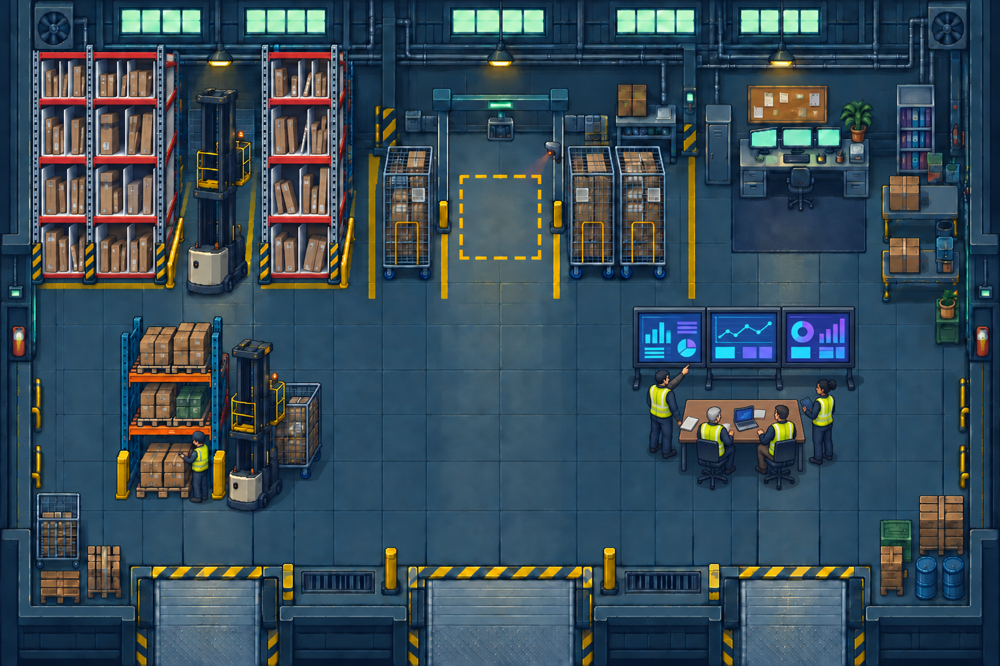

ALWAYS LOOKING FOR A BETTER WAY
Hi, I’m Shuyu.
Welcome to my world of operations.
OPERATIONS MANAGER / ICQA LEADER
Take a walk with me through the projects I’ve built to make work safer, simpler, and more efficient.
Choose a stop. See the problem, the approach, and the impact.
THE WAREHOUSE5 STOPS TO EXPLORE

Real projects.
A world you can explore.
A world you can explore.
Bin LinersStow GuidanceOnboarding PortalA-Level BeamsAI-Powered Operations
BAY AREA, CALIFORNIAPEOPLE + PROCESS + PRACTICAL TOOLSPERSONAL PORTFOLIO / 2026
SHUYU'S WAREHOUSE
Your floor walk starts here.
Click or tap to walk↑←↓→ or WASDEnter Explore a stop
OFF THE CLOCK
Same Shuyu. Different court.
Outside operations, I’m a basketball fan. Welcome to my slightly biased pickup game.
SHUYU’S HOUSE RULE
Only Shuyu or a teammate receiving his direct pass can score. Everyone else is here for the cardio.
Squad points0 / 21
Shuyu’s points0
Shuyu’s assists0
Shot clock24
Shot timingShuyu can score
Release in green · about 1 second
Tap the court to move. Hold the shoot button, then release in green. E: pass or steal. Q: back to Shuyu. Arrow keys / WASD also move.
Use Pass to find a teammate. The gold ring marks who you control; a star marks Shuyu’s pass recipient. Attack the right basket.